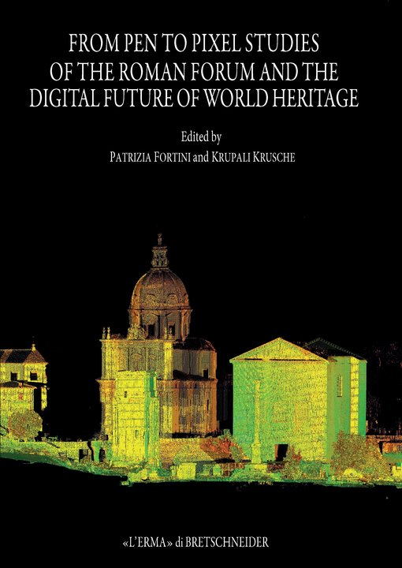
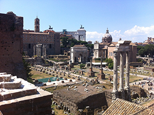
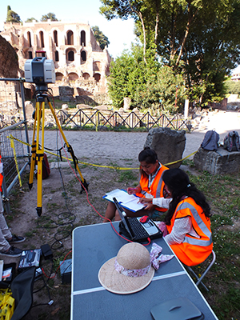

<!DOCTYPE html>
<html xmlns="http://www.w3.org/1999/xhtml" xml:lang="en-gb" lang="en-gb" dir="ltr">

<!-- Mirrored from dharma.crc.nd.edu/index.php/projects/italy/roman-forum/from-pen-to-pixel by HTTrack Website Copier/3.x [XR&CO'2014], Mon, 06 May 2024 15:08:10 GMT -->
<!-- Added by HTTrack --><meta http-equiv="content-type" content="text/html;charset=utf-8" /><!-- /Added by HTTrack -->
<head>
	<meta name="viewport" content="width=device-width, initial-scale=1.0" />
	<meta charset="utf-8" />
	<base  />
	<meta name="author" content="Xiaoyun Zhang" />
	<meta name="description" content="Dharma3D website" />
	<meta name="generator" content="Joomla! - Open Source Content Management" />
	<title>From pen to pixel</title>
	<link href="../../../../templates/protostar-dharma/favicon.ico" rel="shortcut icon" type="image/vnd.microsoft.icon" />
	<link href="../../../component/search/indexf3ef.html?Itemid=173&amp;format=opensearch" rel="search" title="Search Dharma" type="application/opensearchdescription+xml" />
	<link href="../../../../templates/protostar-dharma/css/template.css" rel="stylesheet" />
	<script src="../../../../media/jui/js/jquery.minf928.js?d1d4c933315f4824150e82cd6bd46437"></script>
	<script src="../../../../media/jui/js/jquery-noconflictf928.js?d1d4c933315f4824150e82cd6bd46437"></script>
	<script src="../../../../media/jui/js/jquery-migrate.minf928.js?d1d4c933315f4824150e82cd6bd46437"></script>
	<script src="../../../../media/system/js/captionf928.js?d1d4c933315f4824150e82cd6bd46437"></script>
	<script src="../../../../media/jui/js/bootstrap.minf928.js?d1d4c933315f4824150e82cd6bd46437"></script>
	<script src="../../../../templates/protostar-dharma/js/template.js"></script>
	<!--[if lt IE 9]><script src="/media/system/js/html5fallback.js?d1d4c933315f4824150e82cd6bd46437"></script><![endif]-->
	<script>
jQuery(window).on('load',  function() {
				new JCaption('img.caption');
			});
	</script>

				<link href='http://fonts.googleapis.com/css?family=Open+Sans:400,400italic,600,600italic,700' rel='stylesheet' type='text/css' />
		<style type="text/css">
			body.site{
				font-family: 'Open Sans', sans-serif;
			}
		</style>
				<style type="text/css">
		body.site
		{
			background-color: #e5e5e5		}
		a
		{
			color: #0088cc;
		}
		.nav-list > .active > a, .nav-list > .active > a:hover, .dropdown-menu li > a:hover, .dropdown-menu .active > a, .dropdown-menu .active > a:hover, .nav-pills > .active > a, .nav-pills > .active > a:hover
		{
			background: #0088cc;
		}
	</style>
		<!--[if lt IE 9]>
		<script src="/media/jui/js/html5.js"></script>
	<![endif]-->
</head>

<body class="site com_content view-article no-layout no-task itemid-173">

	<!-- Body -->
	<div class="body">
		<div class="container">
          <div class="shadow-box">
			<!-- Header -->
			<header class="header" role="banner">
				<div class="header-inner clearfix">
					<a class="brand pull-left" href="../../../../index.html">
						<span class="site-title" title="Dharma">D.H.A.R.M.A.</span>													<div class="site-description">Digital Historic Architectural Research and Material Analysis</div>											</a>
					<div class="header-search pull-right">
						<div class="search">
	<form action="https://dharma.crc.nd.edu/index.php/projects/italy/roman-forum/from-pen-to-pixel" method="post" class="form-inline" role="search">
		<label for="mod-search-searchword119" class="element-invisible">Search ...</label> <input name="searchword" id="mod-search-searchword119" maxlength="200"  class="inputbox search-query input-medium" type="search" placeholder="Search ..." />		<input type="hidden" name="task" value="search" />
		<input type="hidden" name="option" value="com_search" />
		<input type="hidden" name="Itemid" value="173" />
	</form>
</div>

					</div>
				</div>
			</header>
							<nav class="navigation" role="navigation">
					<div class="navbar">
						<a class="btn btn-navbar btn-block collapsed" data-toggle="collapse" data-target=".nav-collapse">
							<span class="icon-bar"></span>
							<span class="icon-bar"></span>
							<span class="icon-bar"></span>
						</a>
					</div>
					<div class="nav-collapse">
						<ul class="nav menu nav-just nav-italy mod-list">
<li class="item-112 parent"><a href="../../../about/introduction.html" >About</a></li><li class="item-118 active deeper parent"><a href="../../../projects.html" >Projects</a><ul class="nav-child unstyled small"><li class="item-120 active deeper parent"><a href="../roman-forum.html" >Roman Forum</a><ul class="nav-child unstyled small"><li class="item-170 active deeper parent"><a href="../roman-forum.html" >Roman Forum</a><ul class="nav-child unstyled small"><li class="item-172"><a href="roman-forum-app.html" >Roman Forum App</a></li><li class="item-173 current active"><a href="from-pen-to-pixel.html" >From pen to pixel</a></li></ul></li><li class="item-171 parent"><a href="../vatican.html" >Vatican City</a></li></ul></li><li class="item-177"><a href="../vatican.html" >Vatican City</a></li><li class="item-176 parent"><a href="../../taj-mahal-menu/taj-mahal.html" >India</a></li><li class="item-183 parent"><a href="../../mainvisualization/visualization-forum.html" >Visualization</a></li></ul></li><li class="item-119"><a href="../../../publications.html" >Publications</a></li><li class="item-127"><a href="../../../community.html" >Visualization</a></li><li class="item-128 parent"><a href="../../../news-events.html" >News &amp; Events</a></li></ul>

					</div>
				</nav>
						
			<div class="row-fluid">
									<!-- Begin Sidebar -->
					<div id="sidebar" class="span3">
						<div class="sidebar-nav">
									<div class="moduletable">
							<h3 class=" menu-header">DHARMA in Italy</h3>
						<ul class="nav menu daspos_sidenav mod-list">
<li class="item-170 deeper parent"><a href="../roman-forum.html" >Roman Forum</a><ul class="nav-child unstyled small"><li class="item-172"><a href="roman-forum-app.html" >Roman Forum App</a></li><li class="item-173 current"><a href="from-pen-to-pixel.html" >From pen to pixel</a></li></ul></li><li class="item-171 deeper parent"><a href="../vatican.html" >Vatican City</a><ul class="nav-child unstyled small"><li class="item-178"><a href="../vatican/evolution-of-cortile-del-belvedere.html" >Rediscovering the Belvedere</a></li><li class="item-186"><a href="../vatican/vatican-publications.html" >Written Works</a></li></ul></li></ul>
		</div>
	
						</div>
					</div>
					<!-- End Sidebar -->
								<main id="content" role="main" class="span9">
					<!-- Begin Content -->
					
					<div id="system-message-container">
	</div>

					<div class="item-page" itemscope itemtype="https://schema.org/Article">
	<meta itemprop="inLanguage" content="en-GB" />
	
		
						
		
	
	
		
								<div itemprop="articleBody">
		<p class="emphasis">&nbsp;</p>
<table style="height: 669px; width: 1072px; margin-left: auto; margin-right: auto;">
<tbody>
<tr style="height: 92px;">
<td style="width: 31px; height: 92px;">&nbsp;</td>
<td style="width: 377px; height: 92px;"></td>
<td style="width: 53px; height: 92px;">&nbsp;</td>
<td style="width: 532.422px; height: 92px;">
<p style="text-align: center;"><span style="font-size: 18pt;"><strong><span style="font-family: 'times new roman', times, serif; color: #c23f0c;"><span style="color: #c23f0c;">Studies of the Roman Forum </span></span></strong></span></p>
<p style="text-align: center;"><span style="font-size: 18pt;"><strong><span style="font-family: 'times new roman', times, serif; color: #c23f0c;"><span style="color: #c23f0c;"><span style="font-size: 18pt;">and the <span style="color: #c23f0c;">Digital</span> Future of World Heritage</span><br /></span></span></strong></span></p>
</td>
<td style="width: 35.5781px; height: 92px;">&nbsp;</td>
</tr>
<tr style="height: 19px;">
<td style="width: 31px; height: 19px;">&nbsp;</td>
<td style="width: 377px; height: 19px;">&nbsp;</td>
<td style="width: 53px; height: 19px;">&nbsp;</td>
<td style="width: 532.422px; height: 19px;">&nbsp;</td>
<td style="width: 35.5781px; height: 19px;">&nbsp;</td>
</tr>
<tr style="height: 228px;">
<td style="width: 31px; height: 228px;">&nbsp;</td>
<td style="background-color: #f7f7f7; width: 377px; height: 228px;">
<p>&nbsp;</p>
<p></p>
<p style="text-align: center;"><span style="font-size: 10pt; font-family: 'times new roman', times, serif;">Front cover of "From Pen to Pixel"</span></p>
</td>
<td style="background-color: #f7f7f7; width: 53px; height: 228px;">&nbsp;</td>
<td style="background-color: #f7f7f7; width: 532.422px; height: 228px; vertical-align: top;">
<p>&nbsp;</p>
<p>&nbsp;</p>
<p><span style="font-family: 'times new roman', times, serif; color: #c23f0c;">History, Civilization, and the Poetry of Documentation</span></p>
<p><span style="font-family: 'times new roman', times, serif;">Forum is a consortium for people, cultures, politics, religion, histories, and architecture of all kinds. Ideas, opinions, conflicts, and gossip all formed their firm roots in this place and when combined with exceptional skills created history on many occasions of Western Civilization. One such place, that has been idealized in its tiny footprint is the most revered location in all of history.&nbsp;</span></p>
<p><span style="font-family: 'times new roman', times, serif;">The collaborative work of <a href="https://architecture.nd.edu/faculty/krupali-uplekar-krusche/">Prof. Dr. Ing. Krupali Krusche</a>&nbsp;and&nbsp;<a href="http://archeoroma.beniculturali.it/en" target="blank_">Dott.ssa Patrizia Fortini</a>&nbsp;for the last ten years with&nbsp;the DHARMA (Digital Historic Architectural Research and Material Analysis) Lab has been recording the Forum as an urban precinct of some of the most important ancient monuments of Italy. This book is supported with a synopsis of never before published drawings with a complete set of measure drawn plans, elevations, and panoramic views of the Forum in 3D point cloud, Gigapan photographs, line drawing, and watercolor formats. And is a precursor to the study and analysis of the urban relationships and new findings in the Forum.</span></p>
<p>&nbsp;</p>
<p style="text-align: right;"><span style="font-family: 'times new roman', times, serif;"><span style="background-color: #f2e9e6;">&nbsp; &nbsp; &nbsp; &nbsp;<a href="http://195.231.2.149/index.php?pg=SchedaTitolo&amp;key=00013573">Access&nbsp;Publisher Site</a>&nbsp; &nbsp; &nbsp; &nbsp; &nbsp; &nbsp;</span> &nbsp; &nbsp;&nbsp;</span></p>
</td>
<td style="width: 35.5781px; height: 228px; background-color: #f7f7f7; vertical-align: top;">&nbsp;</td>
</tr>
<tr style="height: 15px;">
<td style="width: 31px; height: 15px;">&nbsp;</td>
<td style="width: 377px; height: 15px;">&nbsp;</td>
<td style="width: 53px; height: 15px;">&nbsp;</td>
<td style="width: 532.422px; height: 15px;">&nbsp;</td>
<td style="width: 35.5781px; height: 15px;">&nbsp;</td>
</tr>
<tr style="height: 334.312px;">
<td style="width: 31px; height: 334.312px;">&nbsp;</td>
<td colspan="3" style="width: 962.422px; height: 334.312px; vertical-align: top;">
<p>&nbsp;</p>
<p style="text-align: center;"><span style="font-size: 14pt; color: #c23f0c;"><strong><span style="font-family: 'times new roman', times, serif;">&nbsp; &nbsp; Abstract&nbsp; &nbsp;&nbsp;</span></strong></span></p>
<p style="text-align: center;">&nbsp;</p>
<p style="text-align: justify;"><span style="font-family: 'times new roman', times, serif;"><span style="color: #c23f0c; font-size: 18pt;">E</span>fforts to build, rebuild and maintain the Forum Romanum, Rome' s historic urban epicenter, are likely as old as the place it self - some 2800 years. As a result the historic significance and archaeological richness of the Forum cannot be overestimated. Despite its many changes the Forum Romanum' s survival today represents an outstanding example of cultural heritage continuity. Its highest possible protection status among monuments conservation agencies in Italy and its early listing on UNESCO' s World Heritage List in 1980 are testaments to this. Due to its remarkable physical survival, the Forum Romanum has been the object of extensive research, documentation, restoration and preservation efforts over the past two centuries especially. The sophistication of these measures evolved to include a wide range of expertise. Lay interest among antiquarians and architects in Rome' s past from the Renaissance through the eighteenth century was supplanted by the emerging new disciplines of archaeology, architectural restoration and museology. From the late nineteenth century corresponding advancements in archaeological method and conservation theory and science were increasingly applied. From this time on as well, expectations for preserving and presenting the Forum Romanum were high, the famous site being a matter of intense Roman pride, political interest, and serving as a&nbsp;<span class="f0s24">must see' destination for visitors to Rome. Leading historians, archaeologists and conservators have been central to the story of the Forum' s survival and interpretation. While numerous noted antiquarians and historians preceded him the architect and archaeologist Giocomo Boni (1859-1925) was unusual, even prescient, in his approach and treatment of the place during his tenure as director of excavations of the Forum Romanum from 1898 until 1925. His combined talents as an architect, archaeologist and conservator set a standard at the time for careful research, thorough documentation, and responsible conservation measures. The sponsors of the DHARMA conference have wisely chosen to focus on archaeological research and conservation in the Forum during Giacomo Boni' s tenure since his work reflects early&nbsp;best practices' in researching, preserving and interpreting such places. To frame the discussion some precedents and influences of the work of Giacomo Boni are offered.</span> </span></p>
</td>
<td style="width: 35.5781px; height: 334.312px;">&nbsp;</td>
</tr>
<tr style="height: 101px;">
<td style="width: 31px; height: 101px;">&nbsp;</td>
<td colspan="3" style="width: 377px; height: 101px; text-align: center;"><span style="font-size: 14pt; font-family: 'times new roman', times, serif;"><strong><span style="color: #c23f0c;">&nbsp; &nbsp; &nbsp; &nbsp; Featured Chapters and Discussions&nbsp; &nbsp;&nbsp;</span></strong></span></td>
<td style="width: 35.5781px; height: 101px;">&nbsp;</td>
</tr>
<tr style="height: 284px;">
<td style="width: 31px; height: 284px;">&nbsp;</td>
<td style="background-color: #f7f7f7; vertical-align: top; height: 284px; width: 377px;">
<p>&nbsp;</p>
<p style="text-align: center;"><span style="font-family: 'times new roman', times, serif; font-size: 10pt;">Roman Forum as today</span></p>
</td>
<td style="background-color: #f7f7f7; height: 284px; width: 53px;">&nbsp;</td>
<td style="background-color: #f7f7f7; vertical-align: top; height: 284px; width: 532.422px;">
<p>&nbsp;</p>
<p>&nbsp;</p>
<p><span style="font-size: 14pt; color: #c23f0c;"><strong><span style="font-family: 'times new roman', times, serif;">The Roman Forum in our Civilization</span></strong></span></p>
<p><span style="font-family: 'times new roman', times, serif; color: #c23f0c;">Carroll William Westfall, Part I</span></p>
<p><span style="font-family: 'times new roman', times, serif;">"Rome&rsquo;s buildings old and new teach how to display the greatness of their institutional masters by clothing them with the beauty they deserve. This beauty shines forth from enduring principles of architecture that are not confined by the various stylistic categories of the classical style. People who turn their eyes to Rome to see examples of specific styles fail to perceive the beautiful that is the counterpart to the good and the true."</span></p>
<p>&nbsp;</p>
<p style="text-align: right;"><span style="font-family: 'times new roman', times, serif;"><span style="background-color: #f2e9e6;"></span></span></p>
</td>
<td style="background-color: #f7f7f7; height: 284px; width: 35.5781px;">&nbsp;</td>
</tr>
<tr style="height: 489px;">
<td style="width: 31px; height: 489px;">&nbsp;</td>
<td style="width: 377px; height: 489px; vertical-align: top;">
<p>&nbsp;</p>
<p style="text-align: center;"><span style="font-family: 'times new roman', times, serif; font-size: 10pt;">DHARMA Team surveying the Forum</span></p>
</td>
<td style="width: 53px; height: 489px;">&nbsp;</td>
<td style="width: 532.422px; height: 489px; vertical-align: top;">
<p>&nbsp;</p>
<p>&nbsp;</p>
<p><span style="font-size: 14pt; color: #c23f0c;"><strong><span style="font-family: 'times new roman', times, serif;">Continuing the Legacy of Boni</span></strong></span></p>
<p><span style="font-family: 'times new roman', times, serif; color: #c23f0c;">Krupali Krusche, Part I</span></p>
<p><span style="font-family: 'times new roman', times, serif;">"Within the field of conservation ethics, these images also present new opportunities to transcend the old dichotomy, personified by Ruskin&rsquo;s philosophy that &ldquo;it is impossible [&hellip;] to restore anything that has ever been great or beautiful in architecture&rdquo; versus Viollet-le-Duc&rsquo;s pragmatic definition of restoration as a means &ldquo;to re-establish [a building] to a finished state, which may in fact never have actually existed at any given time.&rdquo; 3D models have the capacity to include the advantages of both philosophies. They can reduce the necessity to intervene on the historic fabric while at the same time allow the public to understand the different historical layers of a site through the creation of different virtual reconstructions."</span></p>
</td>
<td style="width: 35.5781px; height: 489px;">&nbsp;</td>
</tr>
</tbody>
</table>
<p>&nbsp; &nbsp; &nbsp;&nbsp;</p>
<p class="emphasis">&nbsp;</p>	</div>

	
							</div>

					
					<!-- End Content -->
				</main>
											</div>  <!-- Close row-fluid -->
			

	      </div>  <!-- Close shadow-box -->
		</div>  <!-- Close container -->
	</div> <!-- Close body class -->
	<!-- Footer -->
	<footer class="footer" role="contentinfo">
		<div class="container">
			<p class="pull-right">
				<a href="#top" id="back-top">
					Back to Top				</a>
			</p>
			<p style="text-transform: uppercase">
				&copy; 2024 Dharma			</p>
		</div>
	</footer>
	
</body>

<!-- Mirrored from dharma.crc.nd.edu/index.php/projects/italy/roman-forum/from-pen-to-pixel by HTTrack Website Copier/3.x [XR&CO'2014], Mon, 06 May 2024 15:08:15 GMT -->
</html>
